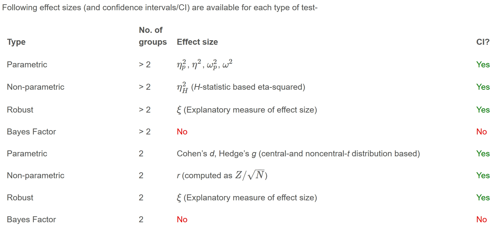

pacman::p_load(ggstatsplot, tidyverse)Hands-on Exercise 4.2
Visual Statistical Analysis
1 Learning Outcome
In this hands-on exercise, you will gain hands-on experience on using:
ggstatsplot package to create visual graphics with rich statistical information,
performance package to visualise model diagnostics, and
parameters package to visualise model parameters
2 Visual Statistical Analysis with ggstatsplot
ggstatsplot  is an extension of ggplot2 package for creating graphics with details from statistical tests included in the information-rich plots themselves.
is an extension of ggplot2 package for creating graphics with details from statistical tests included in the information-rich plots themselves.
- To provide alternative statistical inference methods by default.
- To follow best practices for statistical reporting. For all statistical tests reported in the plots, the default template abides by the APA gold standard for statistical reporting. For example, here are results from a robust t-test:

3 Getting Started
3.1 Installing and launching R packages
In this exercise, ggstatsplot and tidyverse will be used.
3.2 Importing data
Do-It-Myself
Importing Exam.csv data by using appropriate tidyverse package.
exam <- read_csv("data/Exam_data.csv")3.3 One-sample test: gghistostats() method
In the code chunk below, gghistostats() is used to to build an visual of one-sample test on English scores.

set.seed(1234)
gghistostats(
data = exam,
x = ENGLISH,
type = "bayes",
test.value = 60,
xlab = "English scores"
)Default information: - statistical details - Bayes Factor - sample sizes - distribution summary
3.4 Unpacking the Bayes Factor
A Bayes factor is the ratio of the likelihood of one particular hypothesis to the likelihood of another. It can be interpreted as a measure of the strength of evidence in favor of one theory among two competing theories.
That’s because the Bayes factor gives us a way to evaluate the data in favor of a null hypothesis, and to use external information to do so. It tells us what the weight of the evidence is in favor of a given hypothesis.
When we are comparing two hypotheses, H1 (the alternate hypothesis) and H0 (the null hypothesis), the Bayes Factor is often written as B10. It can be defined mathematically as

- The Schwarz criterion is one of the easiest ways to calculate rough approximation of the Bayes Factor.
3.5 How to interpret Bayes Factor
A Bayes Factor can be any positive number. One of the most common interpretations is this one—first proposed by Harold Jeffereys (1961) and slightly modified by Lee and Wagenmakers in 2013:

3.6 Two-sample mean test: ggbetweenstats()
In the code chunk below, ggbetweenstats() is used to build a visual for two-sample mean test of Maths scores by gender.

ggbetweenstats(
data = exam,
x = GENDER,
y = MATHS,
type = "np",
messages = FALSE
)Default information: - statistical details - Bayes Factor - sample sizes - distribution summary
3.7 Oneway ANOVA Test: ggbetweenstats() method
In the code chunk below, ggbetweenstats() is used to build a visual for One-way ANOVA test on English score by race.

ggbetweenstats(
data = exam,
x = RACE,
y = ENGLISH,
type = "p",
mean.ci = TRUE,
pairwise.comparisons = TRUE,
pairwise.display = "s",
p.adjust.method = "fdr",
messages = FALSE
)“ns” → only non-significant
“s” → only significant
“all” → everything
3.7.1 ggbetweenstats - Summary of tests



3.8 Significant Test of Correlation: ggscatterstats()
In the code chunk below, ggscatterstats() is used to build a visual for Significant Test of Correlation between Maths scores and English scores.

ggscatterstats(
data = exam,
x = MATHS,
y = ENGLISH,
marginal = FALSE,
)3.9 Significant Test of Association (Depedence) : ggbarstats() methods
In the code chunk below, the Maths scores is binned into a 4-class variable by using cut().
exam1 <- exam %>%
mutate(MATHS_bins =
cut(MATHS,
breaks = c(0,60,75,85,100))
)In this code chunk below ggbarstats() is used to build a visual for Significant Test of Association

ggbarstats(exam1,
x = MATHS_bins,
y = GENDER)